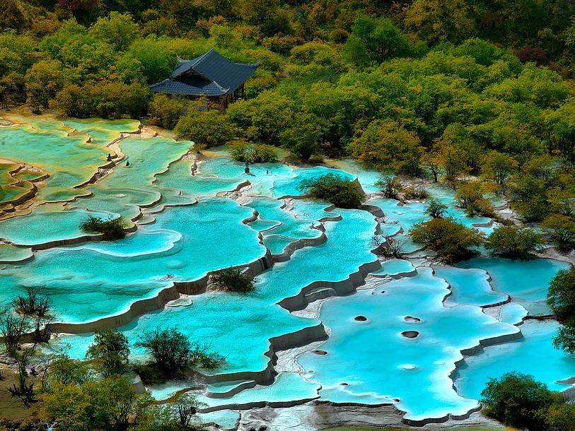
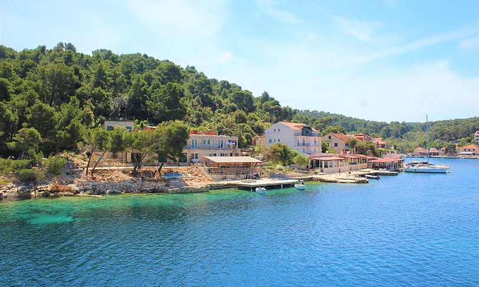

La plage du Paradis Blanc en Australie

Le "Fossé du Dragon Jaune" à Huanglong en ChineThe Wave (La Vague) aux Coyote Buttes en Arizona, Etats-UnisLe désert des Pinnacles en AustralieLe château de coton : Les piscines thermales de Pamukkale en TurquieLes rizières de Jatiluwih à Bali en IndonésieLa "cascade sous-marine" de l’Île MauriceLes temples d'Angkor au Cambodge
L'île de Mljet : perle sauvage en CroatieAnse Source d'Argent sur l'île de la Digue aux Seychelles